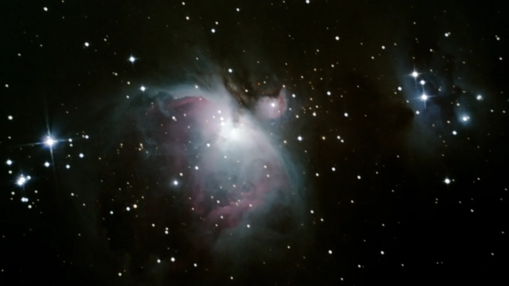

Nick Niziolek - astrophotography --------------------------------
about: Astrophotography is a very recent hobby, motivated by my minor in astrophysics, and love for tinkering with weird science equipment. I am getting into it with as DIY of a setup as possible, leveraging some good ol' FB marketplace finds. I currently shoot on a 6" Newtonian on a PMC8 mount, see the link below for more on that battle.
projects: - [newtonian and mount FB marketplace revival] - [first images with newtonian and mount] - [first images with just Nikon]

[home] last updated: March 2026